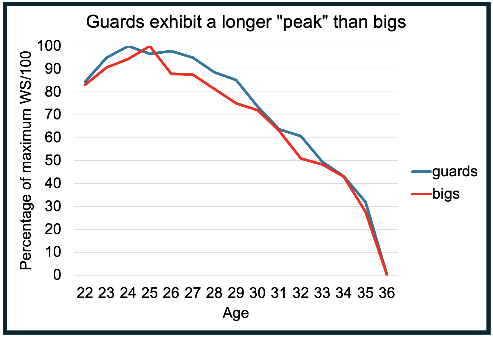
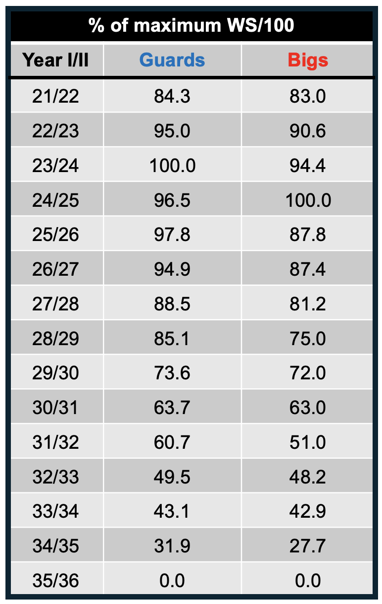
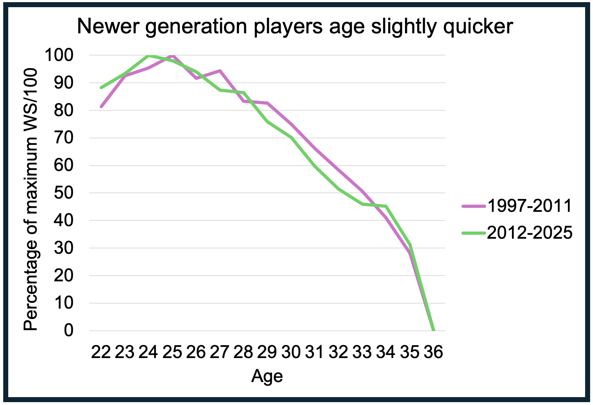
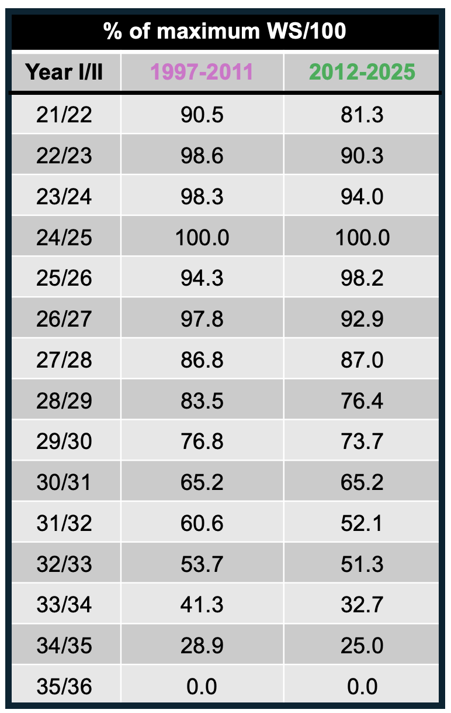

How Do WNBA Players Age? (Part II)
An analysis of how different positions and generations age differently in the WNBA
November 2025
In part one of analyzing aging in the WNBA, I discussed my methodology and how the general WNBA player ages (see Part I). I found that on average WNBA players hit a prime around 23-27 years of age and exhibit consistent decline in both raw and per possession productivity starting at age 28. From the ages of 22 to 25 a WNBA player sees an increase in about 0.5 Win Shares (WS) which is then lost from ages 25 to 28. From 28 to 31 a player on average loses about 0.8 WS and from 31 to 34 they lose over a full WS. Again, this is an average. Meaning that not every player will conform to this pattern as players age differently with a lot of randomness included. For part II, I will discuss how different positions and generations may age differently.
Guards vs. Bigs
Do guards and bigs (forwards and centers) display similar aging curves? Considering guards play and defend on the perimeter while bigs tend to score and defend in the interior, I was curious if these different styles may age differently. I followed the same methodology delineated in part I but split the datasets into two groups—guards and forwards/centers. I used WS per 100 possessions (WS/100) as I think this is the most accurate way to measure player productivity. Since bigs may have inflated WS/100 numbers than guards (see my first Win Contribution post), I normalized each group's WS/100 to the percentage of their maximum WS/100 value, to equally compare the two groups. After doing this, I plotted the aging curves for guards and bigs.


It appears guards develop faster than bigs, as they reach their peak productivity at age 24 where bigs reach it at age 25. Furthermore, guards descend slower from their peak productivity than bigs, at least from ages 26-29. For instance, at age 26 guards are at 98% of their highest per possession productivity, while bigs are at 88%. At age 27, guards are at 95% while bigs are at 87%. At age 28, guards are at 88% while bigs are at 81%. Lastly at 29, guards are at 85% of peak productivity while bigs are at 75%. Thus, guards appear to age almost a full year slower than bigs until 30. At 30, guards and forwards/centers align and appear to be on similar aging trajectories for the rest of their career.
In summary, from the ages of 22-30, guards seem to develop quicker and age slower than bigs. Thus, if a GM must decide between re-signing a 26 year-old guard or center/forward who just completed their rookie contract, the guard may be a better choice for a multi-year contract. Furthermore, if a GM is leveraging the draft to add a low-cost, missing piece for a closing championship window, drafting a guard may yield slightly quicker return on investment.
Old Generation (1997-2011) vs. New Generation (2012-2025)
Does the newer generation of WNBA players age similarly to older players? We split all the WNBA player-seasons in half based on if it was before 2012 or not and examined the separate aging curves, looking at each generation's WS/100.


While these aging curves are similar, it appears new generation players reach their maximum per possession productivity at age 24 while older generation players do so at 25.
Additionally, from the age of 29-33, older generation players are closer to their peak than new generation WNBA players as demonstrated by a rightward shift in the 1997-2011 curve. For instance, at age 29 newer generation players are at 76% of their maximum productivity while older generation players are at 75% at 30. At 32 newer generation players are at 51% of their highest productivity while older generation players are at this same percentage at 33. Therefore, up until 34, older generations age about a year slower than players in the modern era. This suggests that the modern WNBA is getting younger leaving older players farther behind than before.
In this article, I see that position and generation are two key factors behind differential aging in the WNBA. Guards not only reach their maximum productivity earlier than bigs but also linger at this maximum for longer, suggesting that guards have lengthier "peaks." Furthermore, there is a leftward shift in the aging curve for WNBA players in the 2012-2025 era compared to players in the 1997-2011 era. This suggests that modern players are more ready to play at a younger age but consequently regress quicker, hinting at a youth movement in the present WNBA.
In part III, I'll further investigate how certain play styles display differential aging.
This is Part II of a series on WNBA player aging: